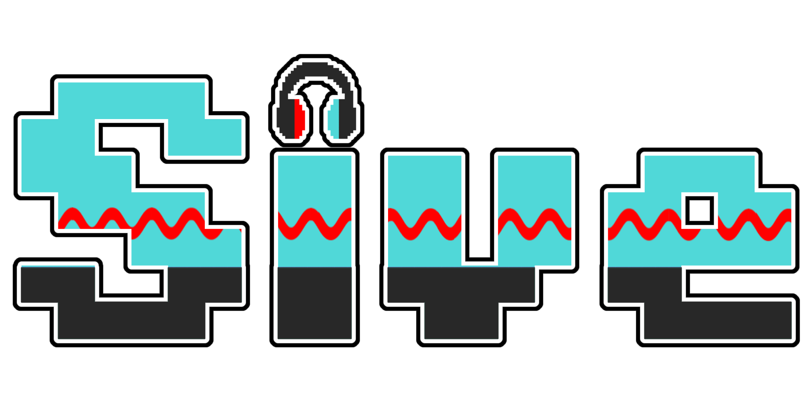
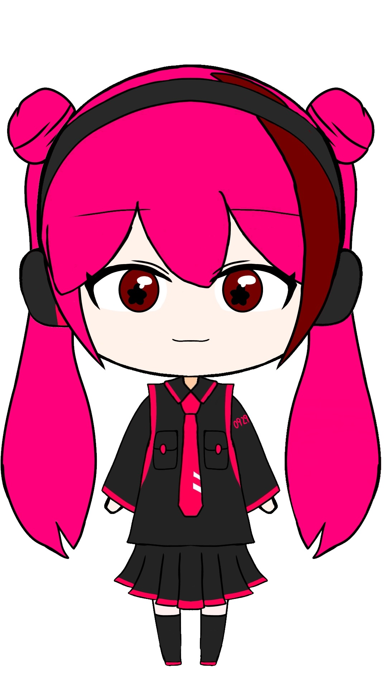

虚音セイ
プロフィール
- 名前： 虚音セイ（そらね せい）
- 年齢： 12歳…かも？
- 性格： お喋り（煽り）が大好き、不敵な性格
- 口癖： 「あはは！ お兄ちゃん見ーっけ！！」
- 誕生日： あなたと出会った日！
- 血液型・MBTI： あなた次第です
- 好き： 正弦波ジャック、クッキー
- 憧れの対象： 重音テト
🎵 ボイスサンプル：きらきら星
詳細設定
ある日ボカロゲームの世界に吸い込まれ、記憶を失って「自分は別世界線のジャックだ」と思い込んでいる少年（正弦波ジャック）がいました。
虚音セイは、そんな彼のことを「お兄ちゃん」と呼び、記憶喪失者を興味の対象として彼を観察しながら、常に付きまとっている謎の少女です。
彼女自身は、自分たちが何者であるかを理解しているようですが、あえてそれを教えずに正弦波ジャックを翻弄することを楽しんでいる様です。